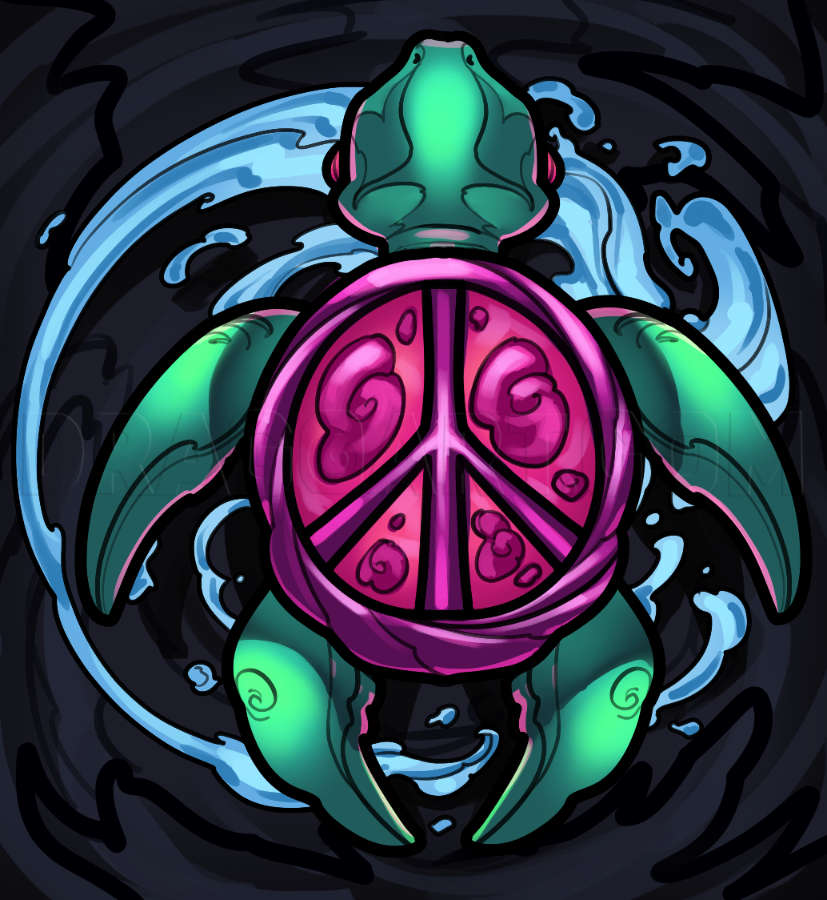

Erv woke up one day with no memory, on a planet known as "Knoada". Unfortunately for Erv, turtles tend to thrive in wet conditions, but his home planet was as dry as the Sahara.
Erv thought to himself one day "There must be a way to get water on this seemingly dry planet! How else could I have been born? I must think." Erv began to sit still day after day, holding his mind steady on the image of waterfalls, flowing rivers, and oceans. Eventually, he even began to "feel" the cool water roll down his shell.
After spending years and years with a still mind, Erv eventually began to have visions. These visions would slowly change over time, but all with one thing in common. In every vision, Erv finds water. One day, as Erv is sitting with his mind fixated on that sweet, sweet life-juice. A strange being came to Erv and said "Congratulations Erv, you have passed the test." Then, he ascended.
After his ascension, Erv spent multiple lifetimes living in pure bliss. Endless oceans of that beautiful crisp blue liquid his heart ever so desired, and he finally had access. Erv had learned the lesson of abundance. He was once in a reality where there was very little to be shared, but no longer this was a problem. He had conquered his mind, at least so he thought...
The Mean Man had arrived.
"Who are you?" said Erv to the dull-grey being that came toward him. "I am here to take you back," the man replied. "You have been here for some time, and while you trained your mind well to arrive here, it seems you have become complacent. You have more work to do." As the strange being finished it's sentence, Erv began to feel himself become extremely heavy. It was as if he had the weight of 1000 pounds upon his shoulders, but he felt no pain. Everything around him slowly began to disintegrate, and the material world came back into form.
All that time spent in bliss, and here he was, back at square one.
Erv woke back up in the material world with no memory. He thought to himself "I must find water!"
